Artist
Asal Fallah
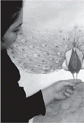
- Born1983
- FromTehran, Iran
- Works21
- Dated2009–2014
StatementAbout the work
Asal Fallah's drawing works surprise at first by the fine trait and the sophisticated technique. This is futher reinforced by the size of the supports she uses: if she appears to have started on very small formats, which somehow recall the Iranian miniature painting tradition, many of her drawings are now on larger scales,but still using the same & very detailed drawing technique.
Much like many Iranian femaleartists, the woman is often the central character of her works. The repeated representation of the same woman through numerous works & the title of the series clearly indicate that Fallah staged herself in her drawings. The woman appears in turns very real,and totally dream-like.
Generally the central character on the drawing, she balances between a dark reality, sometimes even desperate, where she is small, bent under the weight of society, and a dream- like world, heavenly at first sight...
The horizon and the sky are filled with threatening ropes and sheets, the trees and the animals that surround her kepp her captive, strings hide her traits. If at first glance, the softness of all the traits, the finesse of all the drawings let us believe in fairy "dream world", her feminine characters, when looking at the details, appear sad, imprisoned, reduced to the sole dream & anchored in a burdensome reality...
Jenny Hewett
Works21 artworks
Destiny collection


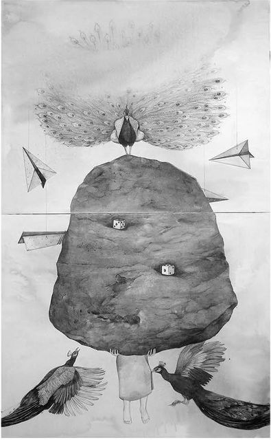

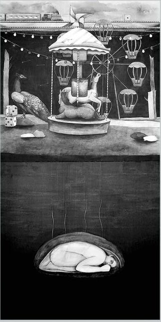

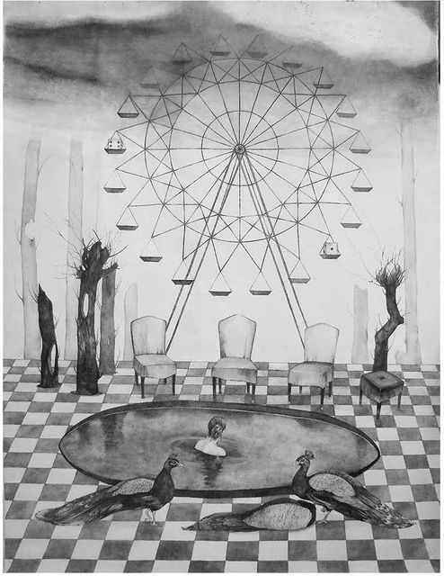

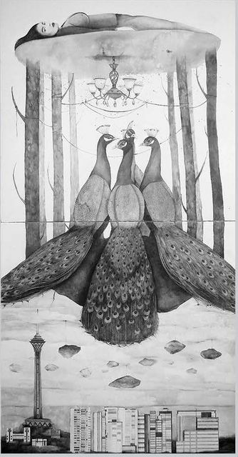

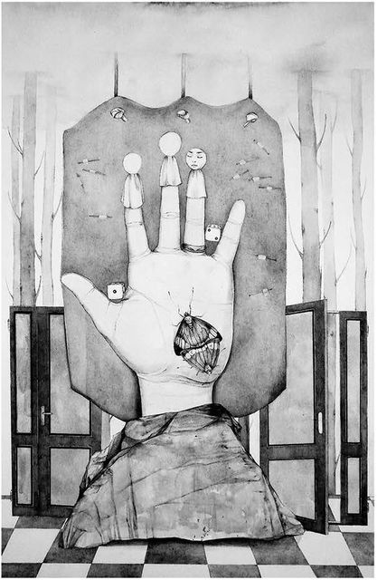

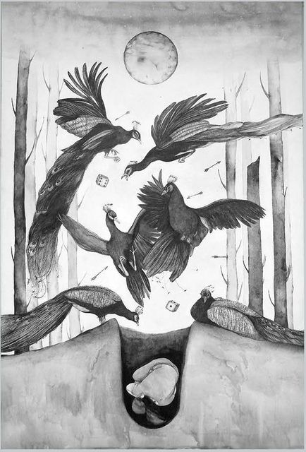
My world collection

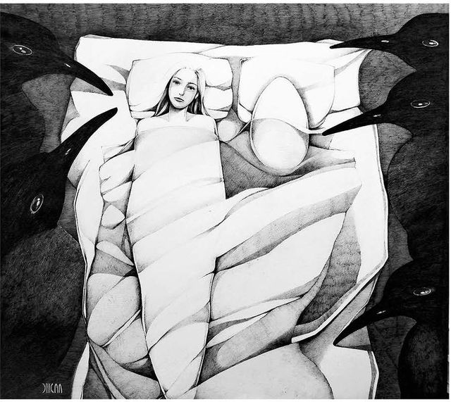

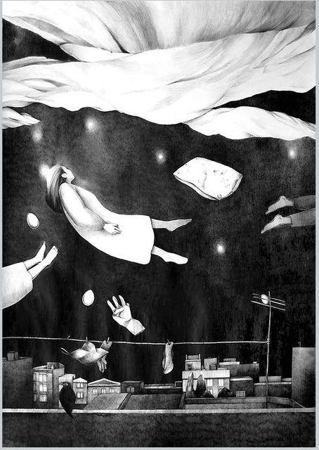

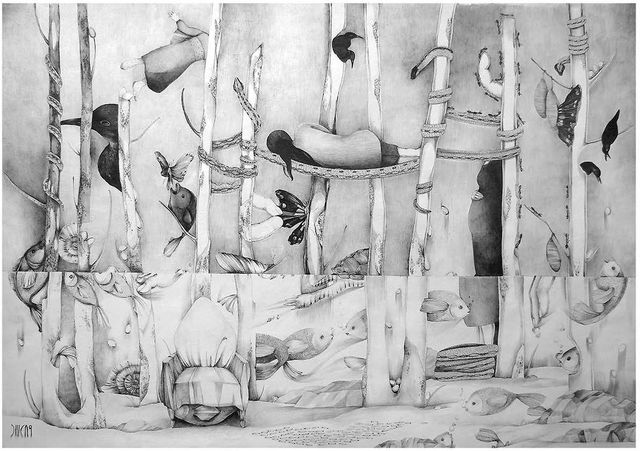

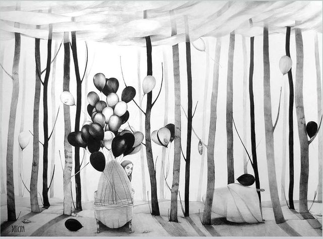

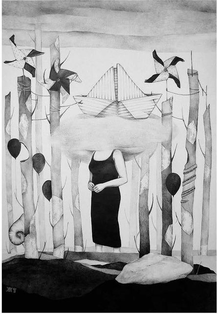

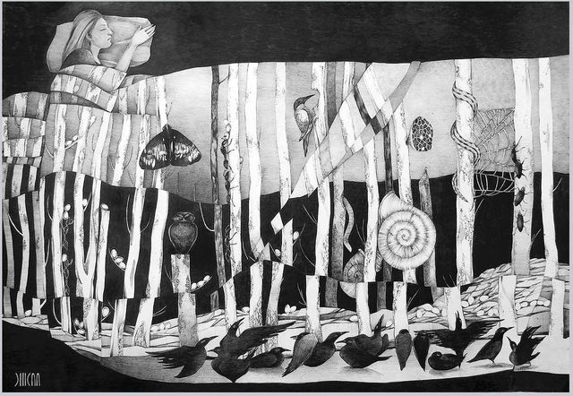

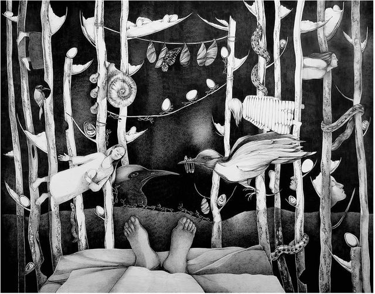

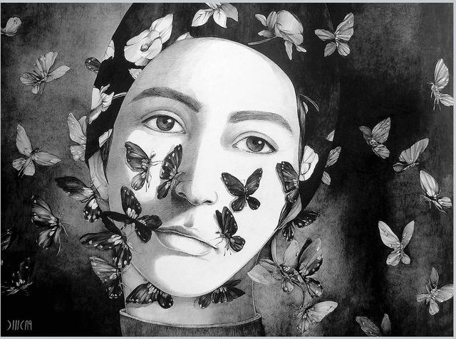

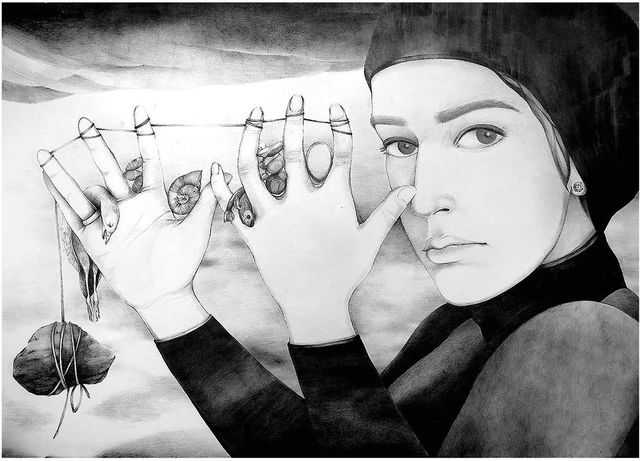

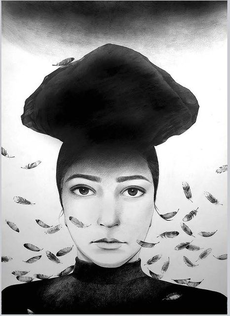

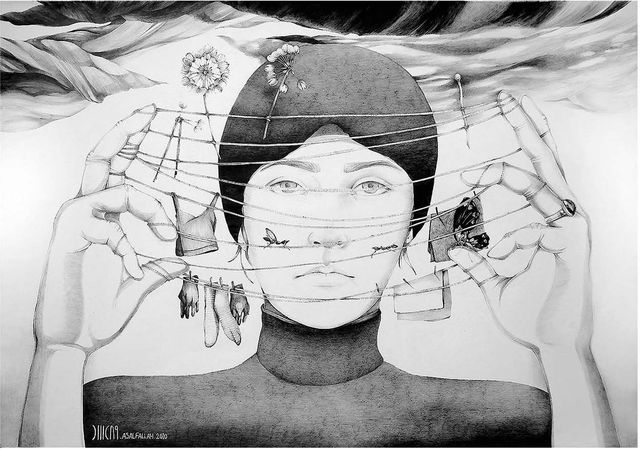

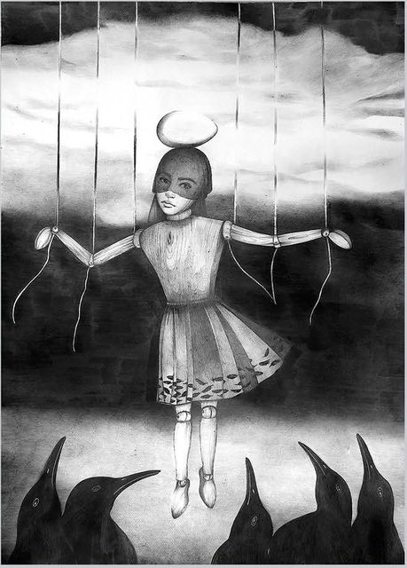

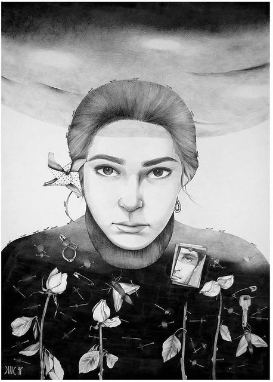

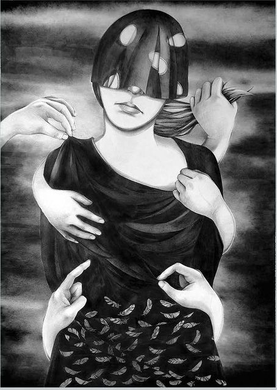
History of experienceBiography · education · exhibitions · awards
Academic and professional background
- 2001Graduate of art school for girls in the field of painting|Tehran – Iran
- 2005Graduate of the Faculty of Art and Architecture in painting, BA degree|Tehran – Iran
- 2012Graduate of the Faculty of Art and Architecture in painting, Masters of art|Tehran – Iran
- Honor's certificate as instructor is obtained from the Ministry of Culture and Islamic Guidance
- A member of Society of Iranian painters, since 2002
- A member of Iranian center for Developing Visual Arts, since 2004
- 2001–2013Cooperation with cultural, art, and educational centers of Tehran municipality (for teaching art history, drawing & painting)
- 2005–2009Cooperation with reputable domestic journals (regarding photography and picture making (illustration)
- 2005–2012Cooperation with numerous private schools regarding teaching of painting, picture making (illustration) and artistic critique)
- 2006–2008Cooperation with Saadatabad Hospital of devotees of nerves and psych (with regard to therapy by painting)
- 2006Cooperation with Play House of Theatre Bureau of Tehran|Tehran, 2009 (Theater Photography)
- And ...
Solo exhibitions
- 2014Maah Art Gallery|Tehran – Iran
- 2013Art People Gallery, San Francisco|California
- 2013Maah Art Gallery|Tehran – Iran
- 2011Seyhoun Art Gallery|Tehran – Iran
- 2008Mirmiran Art Gallery, the House of Iranian Artists|Tehran – Iran
- 2006Art gallery, Arsbaran Cultural Center|Tehran – Iran
Group exhibitions
- 2014Maah Art Gallery|Tehran – Iran
- 2014Art for United Nations World Food Program, World Food Day|Tehran – Iran
- 2014Group art exhibit of Pro ART Gallery|Dubai
- 2013Maah ART Gallery|Tehran – Iran
- 2013Tirgan Festival|Toronto-Canada
- 2013Pro ART Gallery|Dubai
- 2012Farvahar Art Gallery|Tehran – Iran
- 2012Atbin Art Gallery|Tehran – Iran
- 2012Dey Art Gallery|Tehran – Iran
- 2012Shirin Art Gallery|Tehran – Iran
- 2012Ahvaz Museum of Contemporary Art|Ahvaz – Iran
- 2012Ahvaz Museum of Contemporary Art|Ahvaz – Iran
- 2012Pro ART Gallery|Dubai
- 2012ABRA ART Gallery,Los Angeles|California
- 2012ART People Gallery . San Francisco|California
- 2012LYON Academy,LYON|France
- 2009Selected members of Society of Iranian painters, "Form, Expression, Performance", the House of Iranian Artiest|Tehran – Iran
- 2009"Colors for Green" in support of the candidate of Iran presidency, in the field of painting, Pardis Gallery|Tehran – Iran
- 2009Art exhibit of the members of Society of Iranian Painters, the House of Iranian Artists|Tehran – Iran
- 2009Maah-e-Mehr and Elaheh Gallery, with the title "Action, Expression, Creativity in the field of painting|Tehran – Iran
- 2008Society of Iranian Painters ... Niavaran Cultural Center|Tehran – Iran
- 2007Mehrin Gallery|Tehran – Iran
- 2001Asar Gallery|Tehran – Iran
Numerous festivals
- 2013Attendance in Opera Gallery Auction|Dubai
- 2012Tehran Art Expo, Farvahar Art Gallery|Tehran – Iran
- 2010National Festival of Iranian Youth, in the fields of photography, picture making and painting, Saba Museum|Tehran – Iran
- 2009First Pictorial Arts Festival in support of humanitarian movements (Color of Kindness), in the field of painting, Iranian Organization of international societies|Tehran – Iran
- 20092nd Festival of Iranian contemporary Drawing, in the field of drawing, held in Imam Ali Museum of Religious Arts and in Pardis Gallery|Tehran – Iran
- 2008First Fadjr International Festival of visual Arts, held in Tehran Museum of Contemporary Arts in painting, and in Niavaran Cultural Center in photography|Tahran – Iran
- 2008First Visual Festival of Fadjr afarinan, Saba Museum, in the fields of painting and picture making|Tehran – Iran
- 2008First Visual Arts Festival of Pomegranate and sustainable development, Aghili Gallery|Tehran – Iran
- 2003–2015And Attendance in more than 90 group exhibition, Art Festivals and painting workshops.
Prizes++
- 2012Receiving honoring table from the sixeth annual Homa Art Gallery, Selected New Generation.
- 2011Receiving honoring table from first series of national festival of Shamseh.
- 2011Receiving honoring table from 2th series of national festival of Resistance.
- 2009Receiving honoring table from first series of national festival of Iranian youth.
- (All for My World Collection ...)
Source: the Sobhan Gallery artist catalogue “Asal Fallah.pdf”.